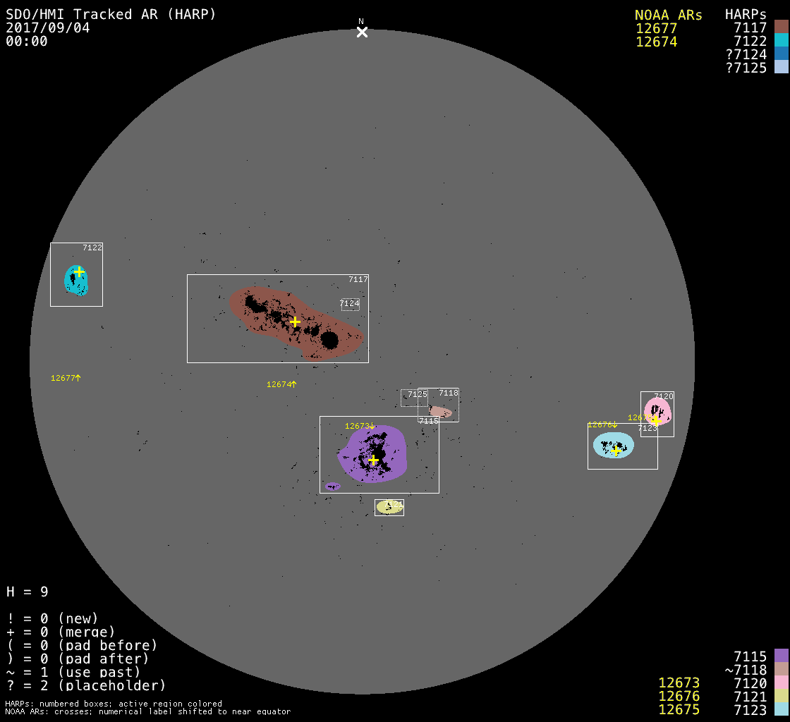
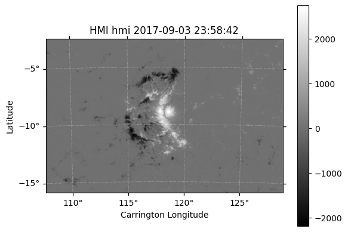

import warnings; warnings.filterwarnings("ignore")The Solar Dynamics Observatory (SDO, Pesnell et al. 2012) / Helioseismic and Magnetic Imager (HMI, Schou et al. 2012) have produced a wealth of data for the Sun, particularly the magnetic field on the solar surface (photosphere). The Space-Weather HMI Active Region Patches (SHARPs, Bobra et al. 2014) are a set of data products derived from the HMI data, which have been used extensively in solar physics and space weather research. The information for the SHARP data is available on this JSOC page.
This post focuses on how to calculate the SHARP parameters from the SHARP CEA data based on this GitHub repository
SHARP Data Product on JSOC
All SDO data are available from the Standford Joint Science Operations Center (JSOC), which employs the Data Record Management System (DRMS) to manage the data. The data can be accessed through Python using the SunPy’s drms package.
We can establish a connection to the JSOC by creating a drms.Client instance.
- For each dataseries, there are several records identified by one or more prime keywords.
- For each record, there are several keywords that describe the data and segments that contains actual data.
- Users can export the record as a FITS file whose header contains keywords and data array contains segments.
| JSOC Dataseries Name | Description |
|---|---|
hmi.sharp_* |
SHARP data products |
['hmi.sharp_720s',
'hmi.sharp_720s_dconS',
'hmi.sharp_720s_nrt',
'hmi.sharp_cea_720s',
'hmi.sharp_cea_720s_dconS',
'hmi.sharp_cea_720s_nrt']Here, _nrt indicates the near-real-time (NRT) data series with preliminary calibration, whereas the absence of _nrt indicates the definitive data series.
Also, _720s indicates that the data series are obtained with a 720s (12m) cadence.
SHARP vs SHARP CEA
- The SHARP data series
hmi.sharp_720sare definitive data with 31 segments in Charge-Coupled Device (CCD) coordinate system. (a direct cutout from the full-disk image) - The SHARP CEA data seires
hmi.sharp_cea_720sare definitive data with 11 segments in Cylindrical Equal-Area (CEA) coordinate system centered on the patch.
| type | units | protocol | dims | note | |
|---|---|---|---|---|---|
| name | |||||
| magnetogram | int | Gauss | fits | VARxVAR | magnetogram |
| bitmap | char | Enumerated | fits | VARxVAR | Mask for the patch |
| Dopplergram | int | m/s | fits | VARxVAR | Dopplergram |
| continuum | int | DN/s | fits | VARxVAR | continuum intensity |
| inclination | int | deg | fits | VARxVAR | Inclination |
| azimuth | int | deg | fits | VARxVAR | Azimuth |
| field | int | gauss | fits | VARxVAR | Field Strength |
| vlos_mag | int | cm/s | fits | VARxVAR | LOS Velocity with Field |
| dop_width | int | mA | fits | VARxVAR | Doppler Width |
| eta_0 | int | adimensional | fits | VARxVAR | Eta_0 |
| damping | int | Doppler width units | fits | VARxVAR | Damping |
| src_continuum | int | data units | fits | VARxVAR | Continuum |
| src_grad | int | data units | fits | VARxVAR | Gradient |
| alpha_mag | int | adimensional | fits | VARxVAR | Filling Factor with Field |
| chisq | int | fits | VARxVAR | Chisq | |
| conv_flag | char | fits | VARxVAR | flag and index of ME-inversion convergence process | |
| info_map | int | fits | VARxVAR | updated quality map | |
| confid_map | char | fits | VARxVAR | updated confidence index | |
| inclination_err | int | deg | fits | VARxVAR | std of Inclination_Err |
| azimuth_err | int | deg | fits | VARxVAR | std of Azimuth_Err |
| field_err | int | gauss | fits | VARxVAR | std of Field_Err |
| vlos_err | int | cm/s | fits | VARxVAR | std of VLos_Err |
| alpha_err | int | adimensional | fits | VARxVAR | std of Alpha_Err |
| field_inclination_err | int | fits | VARxVAR | cor.coef of Field_Inclination_Err | |
| field_az_err | int | fits | VARxVAR | cor.coef of Field_azimuth_Err | |
| inclin_azimuth_err | int | fits | VARxVAR | cor.coef of Inclination_Azimuth_Err | |
| field_alpha_err | int | fits | VARxVAR | cor.coef of Field_Alpha_Err | |
| inclination_alpha_err | int | fits | VARxVAR | cor.coef of Inclination_Alpha_Err | |
| azimuth_alpha_err | int | fits | VARxVAR | cor.coef of Azimuth_Alpha_Err | |
| disambig | char | none | fits | VARxVAR | Flag for 180 degree change in azimuth |
| conf_disambig | char | none | fits | VARxVAR | Confidence of disambiguation result |
| type | units | protocol | dims | note | |
|---|---|---|---|---|---|
| name | |||||
| magnetogram | int | Gauss | fits | VARxVAR | Line-of-sight magnetogram in CEA projection |
| bitmap | char | Enumerated | fits | VARxVAR | Mask for the patch in CEA coordinates |
| Dopplergram | int | m/s | fits | VARxVAR | Dopplergram in CEA projection |
| continuum | int | DN/s | fits | VARxVAR | Intensitygram in CEA projection |
| Bp | int | Gauss | fits | VARxVAR | B_phi, positive westward |
| Bt | int | Gauss | fits | VARxVAR | B_theta, positive southward |
| Br | int | Gauss | fits | VARxVAR | B_r, positive up |
| Bp_err | int | Gauss | fits | VARxVAR | Standard deviation of B_phi |
| Bt_err | int | Gauss | fits | VARxVAR | Standard deviation of B_theta |
| Br_err | int | Gauss | fits | VARxVAR | Standard deviation of B_r |
| conf_disambig | char | none | fits | VARxVAR | confidence of disambiguation result |
NOAA AR to HARP Matching
A record of the SHARP data series is identified by two prime keywords: HARPNUM (HARP number) and T_REC (observation time). Since HARP is identified independently from the National Oceanic and Atmospheric Administration (NOAA), the HARP number is different from NOAA active region (AR) number. Even one HARP can correspond to zero, one, or more NOAA ARs. There is a file for mapping between HARP numbers and NOAA AR numbers here.
Also, the SHARP keywords include those for NOAA AR numbers, which start with NOAA_.
| type | recscope | defval | units | note | linkinfo | is_time | is_integer | is_real | is_numeric | |
|---|---|---|---|---|---|---|---|---|---|---|
| name | ||||||||||
| NOAA_AR | int | variable | -2147483648 | none | NOAA AR number that best matches this HARP | None | False | True | False | True |
| NOAA_NUM | int | variable | -2147483648 | none | Number of NOAA ARs that match this HARP (0 allowed) | None | False | True | False | True |
| NOAA_ARS | string | variable | none | Comma-separated list of NOAA ARs matching this HARP | None | False | False | False | False |
As an example, let’s find the HARP number corresponding to the NOAA AR number 12673 which produced the largest solar flare in solar cycle 24.
To do this, we need to query keywords HARPNUM and NOAA_AR using the drms.Client.query method. The key argument specifies which keywords to query. We need to use two primary keys: the HARP number (blank in this case) and the time range (2017-09-04T00:00:00 in this case).
| HARPNUM | NOAA_AR | NOAA_ARS | NOAA_NUM | |
|---|---|---|---|---|
| 0 | 7115 | 12673 | 12673 | 1 |
| 1 | 7117 | 12674 | 12674,12679 | 2 |
| 2 | 7118 | 0 | MISSING | 0 |
| 3 | 7120 | 12675 | 12675 | 1 |
| 4 | 7121 | 0 | MISSING | 0 |
| 5 | 7122 | 12677 | 12677 | 1 |
| 6 | 7123 | 12675 | 12675,12676 | 2 |
As you can see, the HARP number for the NOAA AR 12673 is 7115.
There are summary images for HARP data here. The following image is the summary image for the HARPs on 2017-09-04T00:00:00.
from IPython.display import Image
Image('http://jsoc.stanford.edu/doc/data/hmi/harp/harp_definitive/2017/09/04/harp.2017.09.04_00:00:00_TAI.png')
At this time, the AR 12673 (HARP 7115) is located near the center of the solar disk, with a slight southward shift.
SHARP CEA Data
Let’s now download the SHARP CEA data for the HARP 7115 (NOAA AR 12673) on 2017-09-04T00:00:00.
There are basically two ways to download data from the JSOC:
- Download merged FITS files (export), which requires an e-mail address registered here.
- Download segments (data) and keywords (metadata) separately and merge them as FITS files if needed.
1. Download merged FITS files
Since this is the SHARP CEA data, there are 11 files (segments) in total.
sharp_cea_list = sorted(sharp_cea_path.glob('*.fits'))
print(len(sharp_cea_list))
for file in sharp_cea_list:
print(file.name)11
hmi.sharp_cea_720s.7115.20170904_000000_TAI.bitmap.fits
hmi.sharp_cea_720s.7115.20170904_000000_TAI.Bp.fits
hmi.sharp_cea_720s.7115.20170904_000000_TAI.Bp_err.fits
hmi.sharp_cea_720s.7115.20170904_000000_TAI.Br.fits
hmi.sharp_cea_720s.7115.20170904_000000_TAI.Br_err.fits
hmi.sharp_cea_720s.7115.20170904_000000_TAI.Bt.fits
hmi.sharp_cea_720s.7115.20170904_000000_TAI.Bt_err.fits
hmi.sharp_cea_720s.7115.20170904_000000_TAI.conf_disambig.fits
hmi.sharp_cea_720s.7115.20170904_000000_TAI.continuum.fits
hmi.sharp_cea_720s.7115.20170904_000000_TAI.Dopplergram.fits
hmi.sharp_cea_720s.7115.20170904_000000_TAI.magnetogram.fitsUsing sunpy.map.Map, we can easily read the SHARP CEA data and visualize it. Let’s see the Br component of the magnetic field.
from sunpy.map import Map
sharp_cea_br = Map(sharp_cea_path / 'hmi.sharp_cea_720s.7115.20170904_000000_TAI.Br.fits')
sharp_cea_br.peek()
The below shows the FITS header of this file.
SIMPLE = T / file does conform to FITS standard
BITPIX = 32 / data type of original image
NAXIS = 2 / dimension of original image
NAXIS1 = 688 / length of original image axis
NAXIS2 = 448 / length of original image axis
BLANK = -2147483648
BZERO = 0.0
BSCALE = 0.01
CHECKSUM= 'ZoJAflG8ZlGAflG5' / HDU checksum updated 2025-08-01T11:36:33
DATASUM = '2018488944' / data unit checksum updated 2017-10-09T03:05:15
DATE = '2017-10-09T03:04:53.000' / [ISO] HDU creation date
DATE_S = '2017-09-08T17:19:08.000' / [ISO] Date_time of generating Stokes data
DATE_B = '2017-09-10T08:49:19.000' / [ISO] Date_time of generating Bharp data
DATE-OBS= '2017-09-03T23:58:42.200' / [ISO] Observation date {DATE__OBS}
T_OBS = '2017.09.04_00:00:04.203_TAI' / [TAI] nominal time
T_REC = '2017.09.04_00:00:00.000_TAI' / [TAI] Slot time
TRECEPOC= '1993.01.01_00:00:00.000_TAI' / [TAI] Time of origin {T_REC_epoch}
TRECSTEP= 720.0 / [seconds] ts_eq step {T_REC_step}
TRECUNIT= 'secs ' / ts_eq unit {T_REC_unit}
CADENCE = 720.0 / [seconds] repetition interval
USFLUX = 2.33095666E+22 / [Maxwell] Total unsigned flux
MEANGAM = 60.9712143 / [Degrees] Mean inclination angle, gamma
MEANGBT = 108.533112 / [Gauss/Mm] Mean value of the total field gradie
MEANGBZ = 122.083214 / [Gauss/Mm] Mean value of the vertical field gra
MEANGBH = 81.9712906 / [Gauss/Mm] Mean value of the horizontal field g
MEANJZD = -0.176174253 / [mA/(m^2)] Mean vertical current density
TOTUSJZ = 56044520700000.0 / [Amperes] Total unsigned vertical current
MEANALP = -0.0666425973 / [1/Mm] Mean twist parameter, alpha
MEANJZH = -0.0351469964 / [(G^2)/m] Mean current helicity
TOTUSJH = 3211.80591 / [(G^2)/m] Total unsigned current helicity
ABSNJZH = 1280.44019 / [(G^2)/m] Absolute value of the net current hel
SAVNCPP = 53733652200000.0 / [Amperes] Sum of the Absolute Value of the Net
MEANPOT = 17168.6914 / [Ergs per cubic centimeter] Mean photospheric e
TOTPOT = 8.30700913E+23 / [Ergs per cubic centimeter] Total photospheric
MEANSHR = 51.6004753 / [Degrees] Mean shear angle for B_total
SHRGT45 = 57.4177246 / [Percentage of Total] Area with shear angle gre
R_VALUE = 4.91179323 / [Maxwell] Unsigned Flux R (Schrijver, 2007)
GWILL = / [Mm] (MISSING) GWILL (Mason & Hoeksema, 2010)
CTYPE1 = 'CRLN-CEA' / CRLN
CTYPE2 = 'CRLT-CEA' / CRLT
CRPIX1 = 344.5 / [pixel] X coordinate of patch center with respe
CRPIX2 = 224.5 / [pixel] Y coordinate of patch center with respe
CRVAL1 = 118.228928 / [degree] Longitude at center of patch
CRVAL2 = -9.24354935 / [degree] Latitude at center of patch
CDELT1 = 0.0299999993 / [degree] Map scale in X direction
CDELT2 = 0.0299999993 / [degree] Map scale in Y direction
CUNIT1 = 'degree ' / Degree
CUNIT2 = 'degree ' / Degree
IMCRPIX1= 2040.19434 / [pixel] Location of the Sun center in CCD x dir
IMCRPIX2= 2050.66919 / [pixel] Location of the Sun center in CCD y dir
IMCRVAL1= 0.0 / [arcsec] x origin
IMCRVAL2= 0.0 / [arcsec] y origin
CROTA2 = 0.0 / [deg] CROTA2: INST_ROT + SAT_ROT
CRDER1 = 0.0 / [arcsec] CRDER1: estimate of random error in co
CRDER2 = 0.0 / [arcsec] CRDER2: estimate of random error in co
CSYSER1 = / [arcsec] (MISSING) CSYSER1: estimate of systema
CSYSER2 = / [arcsec] (MISSING) CSYSER2: estimate of systema
WCSNAME = 'Carrington Heliographic' / WCS system name
DSUN_OBS= 150858023996.63818 / [meters] Distance from SDO to Sun center.
DSUN_REF= 149597870691.0 / [meters] Astronomical Unit
RSUN_REF= 696000000.0 / [m] Reference radius of the Sun: 696,000,000.0
CRLN_OBS= 115.300667 / [deg] Carrington longitude of the observer
CRLT_OBS= 7.24144268 / [deg] Carrington latitude of the observer
CAR_ROT = 2194 / Carrington rotation number of CRLN_OBS
OBS_VR = 2555.889497463884 / [m/s] velocity of the observer in radial direct
OBS_VW = 28877.653628739867 / [m/s] velocity of the observer solar
OBS_VN = 611.9685861024672 / [m/s] velocity of the observer solar
RSUN_OBS= 951.628662109375 / [arcsec] angular radius of Sun. Corresponds to
TELESCOP= 'SDO/HMI ' / Telescope
INSTRUME= 'HMI_COMBINED' / For HMI: HMI_SIDE1, HMI_FRONT2, or HMI_COMBINED
WAVELNTH= 6173.0 / [angstrom] Wavelength
CAMERA = 3 / Camera
QUALITY = 0 / SHARP Quality index
QUAL_S = 0 / Level 1p Quality word
QUALLEV1= 0 / Level 1 quality
BUNIT = 'Mx/cm^2 ' / Physical Units {BUNIT_006}
ORIGIN = 'SDO/JSOC-SDP' / Origin
CONTENT = 'HMI observable' / Content
BLD_VERS= 'V9R1X ' / JSOC
CALVER64= 204818 / Calibration Version
CODEVER7= '$Id: sharp.c,v 1.38 2015/03/18 00:28:26 xudong Exp $ $Id' / CVS Versi
HFLID = 1022 / HMI_SEQ_ID_FRAMELIST
HCFTID = 11 / HMI_SEQ_ID_FOCUS
QLOOK = 0 / QLOOK: 0=final data, 1=quick
HARPNUM = 7115 / HARP ID
MASK = 32 / Lower threshold for membership in this patch
ARM_QUAL= 0 / Quality of the mask (bitfield)
ARM_NCLN= 0 / Number of limb pixels reset to quiet (annulus w
H_MERGE = 0 / 1 if this HARP merged with an existing region a
H_FAINT = 0 / 1 if this HARP had faint contrast at this time
ARM_MODL= '/builtin/hmi.M_Ic_noLimbDark_720s.production' / ARmask parameter: Cla
ARM_EDGE= 2.5 / ARmask parameter: Width of annulus at limb to p
ARM_BETA= '0.3 ' / ARmask parameter: Mask spatial smoothness
LATDTMIN= -15.9709997 / [degree] Minimum latitude for disk transit
LONDTMIN= -7.3888998 / [degree] Minimum longitude for disk transit
LATDTMAX= -2.51609993 / [degree] Maximum latitude for disk transit
LONDTMAX= 13.2454004 / [degree] Maximum longitude for disk transit
OMEGA_DT= 13.5587997 / [degree/day] Rotation rate over disk transit
NPIX = 104669 / Number of pixels within the patch
SIZE = 9358.12109 / [mH] Projected area of patch on image in micro
AREA = 4898.90918 / [mH] De
NACR = 20091 / Number of active pixels in patch
SIZE_ACR= 1796.27209 / [mH] Projected area of active pixels on image i
AREA_ACR= 938.419678 / [mH] De
MTOT = 14614653.0 / [weber] Sum of absolute LoS flux within the ide
MNET = 2694764.75 / [weber] Net LoS flux within the identified regi
MPOS_TOT= 8654709.0 / [weber] Absolute value of total positive LoS fl
MNEG_TOT= 5959944.0 / [weber] Absolute value of total negative LoS fl
MMEAN = 25.7455864 / [gauss] Mean of LoS flux density
MSTDEV = 317.047974 / [gauss] Standard deviation of LoS flux density
MSKEW = 1.03884447 / Skewness of LoS flux density
MKURT = 8.83417225 / Kurtosis of LoS flux density
LAT_MIN = -15.703517 / [degree] Minimum Stonyhurst latitude of pixels
LON_MIN = -6.76720762 / [degree] Minimum Stonyhurst longitude of pixels
LAT_MAX = -3.89583516 / [degree] Maximum Stonyhurst latitude of pixels
LON_MAX = 7.71703625 / [degree] Maximum Stonyhurst longitude of pixels
LAT_FWT = -9.06213856 / [degree] Stonyhurst latitude of flux
LON_FWT = 2.20005369 / [degree] Stonyhurst longitude of flux
LATFWTPO= -9.32380581 / [degree] Stonyhurst latitude of flux {LAT_FWTPO
LONFWTPO= 2.86910152 / [degree] Stonyhurst longitude of flux {LON_FWTP
LATFWTNE= -8.63728142 / [degree] Stonyhurst latitude of flux {LAT_FWTNE
LONFWTNE= 1.11375129 / [degree] Stonyhurst longitude of flux {LON_FWTN
T_FRST = '2017.08.27_10:00:00.000_TAI' / [TAI] First T_REC stored for HARP (inc
T_FRST1 = '2017.08.28_08:12:00.000_TAI' / [TAI] T_REC of initial HARP detection
T_LAST1 = '2017.09.10_11:12:00.000_TAI' / [TAI] T_REC of final HARP detection
T_LAST = '2017.09.11_03:48:00.000_TAI' / [TAI] Last T_REC stored for HARP (incl
N_PATCH = 1676 / Image slots spanned by HARP (includes pad)
N_PATCH1= 1491 / Image slots spanned by HARP (excludes pad)
N_PATCHM= 85 / Missing images/slots in unpadded HARP interval
NOAA_AR = 12673 / NOAA AR number that best matches this HARP
NOAA_NUM= 1 / Number of NOAA ARs that match this HARP (0 allo
NOAA_ARS= '12673 ' / Comma
INVCODEV= 'vfisvcombine FD10 2013 Apr. 30; uses time-dependent HMI filter &'
CONTINUE 'phase maps&'
CONTINUE '' / Version of VFISV code
INVDOCU = / (MISSING) Document for VFISV code
INVITERA= 200 / Number of iterations of VFISV
INVSTLGT= 'No ' / Flag for stray light. No means that the stray l
INVFLPRF= '' / Flag/Comment on filter
INVPHMAP= '121048472' / Flag/Comment on phase map
USFLUXL = 2.04952041124192E+22 / [Maxwell] Total unsigned flux {INVVLAVE}
MEANGBL = 39.11368179321289 / [Gauss/Mm] Mean value of the line {INVBLAVE}
INVBBAVE= 121.28715632506182 / [gauss] avarage of inverted field strength over
CMASKL = 111256 / [number] Number of pixels that contributed to t
INVNCNVG= 11184843 / Numer of pixels at which ME VFISV converged
AMBCODEV= 'disambig_v3 2013 Dec 06' / Version of Disambig code
AMBDOCU = / (MISSING) Document for Disambig code
AMBGMTRY= 2 / Flag determining whether to use planar or spher
AMBPATCH= 0 / Flag determining whether disambiguation is done
AMBWEAK = 2 / Flag determining method for disambiguating weak
AMBNEROD= 1 / [pixels] Number of pixels by which to erode map
AMBNGROW= 5 / [pixels] Number of pixels by which to grow erod
AMBNPAD = 200 / [pixels] Padding to use in potential field calc
AMBNAP = 10 / [pixels] Width of apodizing window in potential
AMBNTX = 30 / Number of tiles to use in x
AMBNTY = 30 / Number of tiles to use in y
AMBBTHR0= 200.0 / [G] Transverse field strength threshold at disk
AMBBTHR1= 400.0 / [G] Transverse field strength threshold at limb
AMBSEED = 4 / Input random number seed
AMBNEQ = 100 / Number of reconfigurations attempted at each te
AMBLMBDA= 1.0 / Weighting factor between divergence and vertica
AMBTFCT0= 2.0 / Input factor to scale initial temperature
AMBTFCTR= 0.9800000190734863 / Input factor to reduce temperature
DATAVALS= 308224 / Data values {DATAVALS_006}
MISSVALS= 0 / Missing values {MISSVALS_006}
DATAMIN = -2184.78003 / Minimum value {DATAMIN_006}
DATAMAX = 2745.38989 / Maximum value {DATAMAX_006}
DATAMEDN= -3.6447506 / Median value {DATAMEDN_006}
DATAMEAN= 4.10086536 / Mean value from pixels within 99% of solar radi
DATARMS = 254.120453 / RMS {DATARMS_006}
ERRGAM = 0.0170187168 / [Degrees] Error in Mean inclination angle, gamm
ERRTAI = 20.9685936 / [(G^2)/m] Absolute value of the net current hel
ERRBH = 0.166585341 / [Gauss/Mm] Error in Mean value of the horizonta
ERRMPOT = 10.9116526 / [Ergs per cubic centimeter] Error in Mean photo
ERRBT = 0.140896067 / [Gauss/Mm] Error in Mean value of the total fie
ERRTUI = 20.9685936 / [(G^2)/m] Total unsigned current helicity
ERRBZ = 0.103350542 / [Gauss/Mm] Error in Mean value of the vertical
CMASK = 36433.0 / [number] Number of pixels that contributed to t
ERRJZ = 0.0505617075 / [mA/(m^2)] Error in Mean vertical current densi
ERRVF = 7.0435523E+18 / [Maxwell] Error in Total unsigned flux
ERRALP = 0.0010908118 / [1/Mm] Error in Mean twist parameter, alpha
ERRMIH = 0.000575570099 / [(G^2)/m] Mean current helicity
ERRMSHA = 0.000446339604 / [Degrees] Error in Mean shear angle for B_total
ERRUSI = 244641006000.0 / [Amperes] Error in Total unsigned vertical curr
DOFFSET = 50 / [Gauss] Constant value added to the noise mask
ERRTPOT = 5.27956351E+20 / [Ergs per cubic centimeter] Error in Total phot
ERRJHT = 985371771000.0 / [Amperes] Sum of the Absolute Value of the Net
RECNUM = 6009474 / Recnum
DRMS_ID = 'hmi.sharp_cea_720s:6009474:Br' / DRMS ID
PRIMARYK= 'HARPNUM, T_REC' / DRMS primary key
LICENSE = 'LICENSE ' / CC0 1.0
HEADSUM = 'ZAjnaAhkTAhkZAhk' / Keyword checksum
LONGSTRN= 'OGIP 1.0' / The HEASARC Long String Convention may be used.
WAVEUNIT= 'angstrom'
COMMENT FITS (Flexible Image Transport System) format is defined in 'Astronomy
COMMENT and Astrophysics', volume 376, page 359; bibcode: 2001A&A...376..359H
COMMENT This FITS file may contain long string keyword values that are
COMMENT continued over multiple keywords. The HEASARC convention uses the &
COMMENT character at the end of each substring which is then continued
COMMENT on the next keyword which has the name CONTINUE.
HISTORY 2. Download segments and keywords separately
c = drms.Client()
sharp_cea = c.info('hmi.sharp_cea_720s')
sharp_cea_segments = sorted(sharp_cea.segments.index)
print(sharp_cea_segments)['Bp', 'Bp_err', 'Br', 'Br_err', 'Bt', 'Bt_err', 'Dopplergram', 'bitmap', 'conf_disambig', 'continuum', 'magnetogram']| DATE | DATE_S | DATE_B | DATE__OBS | DATE-OBS | T_OBS | T_REC | T_REC_epoch | T_REC_step | T_REC_unit | ... | CMASK | ERRJZ | ERRVF | ERRALP | ERRMIH | ERRMSHA | ERRUSI | DOFFSET | ERRTPOT | ERRJHT | |
|---|---|---|---|---|---|---|---|---|---|---|---|---|---|---|---|---|---|---|---|---|---|
| 0 | 2017-10-09T03:04:53Z | 2017-09-08T17:19:08Z | 2017-09-10T08:49:19Z | 2017-09-03T23:58:42.20Z | 2017-09-03T23:58:42.20Z | 2017.09.04_00:00:04_TAI | 2017.09.04_00:00:00_TAI | 1993.01.01_00:00:00_TAI | 720.0 | secs | ... | 36433.0 | 0.050562 | 7.043552e+18 | 0.001091 | 0.000576 | 0.0 | 2.446410e+11 | 50 | 5.279564e+20 | 9.853718e+11 |
1 rows × 261 columns
| Bp | Bp_err | Br | Br_err | Bt | Bt_err | Dopplergram | bitmap | conf_disambig | continuum | magnetogram | |
|---|---|---|---|---|---|---|---|---|---|---|---|
| 0 | /SUM98/D978177825/S00000/Bp.fits | /SUM98/D978177825/S00000/Bp_err.fits | /SUM98/D978177825/S00000/Br.fits | /SUM98/D978177825/S00000/Br_err.fits | /SUM98/D978177825/S00000/Bt.fits | /SUM98/D978177825/S00000/Bt_err.fits | /SUM98/D978177825/S00000/Dopplergram.fits | /SUM98/D978177825/S00000/bitmap.fits | /SUM98/D978177825/S00000/conf_disambig.fits | /SUM98/D978177825/S00000/continuum.fits | /SUM98/D978177825/S00000/magnetogram.fits |
'http://jsoc.stanford.edu/SUM98/D978177825/S00000/Br.fits'from astropy.io import fits
import matplotlib.pyplot as plt
with fits.open('Br.fits') as hdul:
hdul.info()Filename: Br.fits
No. Name Ver Type Cards Dimensions Format
0 PRIMARY 1 PrimaryHDU 6 ()
1 COMPRESSED_IMAGE 1 CompImageHDU 10 (688, 448) int32 SIMPLE = T / file does conform to FITS standard
BITPIX = 16 / number of bits per data pixel
NAXIS = 0 / number of data axes
EXTEND = T / FITS dataset may contain extensions
COMMENT FITS (Flexible Image Transport System) format is defined in 'Astronomy
COMMENT and Astrophysics', volume 376, page 359; bibcode: 2001A&A...376..359H SIMPLE = T / file does conform to FITS standard
BITPIX = 32 / data type of original image
NAXIS = 2 / dimension of original image
NAXIS1 = 688 / length of original image axis
NAXIS2 = 448 / length of original image axis
BLANK = -2147483648
BZERO = 0.
BSCALE = 0.01
CHECKSUM= 'lBDPo99OlACOl99O' / HDU checksum updated 2017-10-09T03:05:15
DATASUM = '2018488944' / data unit checksum updated 2017-10-09T03:05:15 --------------------------------------------------------------------------- KeyError Traceback (most recent call last) File c:\Users\user\miniconda3\envs\scienv\lib\site-packages\pandas\core\indexes\base.py:3812, in Index.get_loc(self, key) 3811 try: -> 3812 return self._engine.get_loc(casted_key) 3813 except KeyError as err: File pandas/_libs/index.pyx:167, in pandas._libs.index.IndexEngine.get_loc() File pandas/_libs/index.pyx:196, in pandas._libs.index.IndexEngine.get_loc() File pandas/_libs/hashtable_class_helper.pxi:7088, in pandas._libs.hashtable.PyObjectHashTable.get_item() File pandas/_libs/hashtable_class_helper.pxi:7096, in pandas._libs.hashtable.PyObjectHashTable.get_item() KeyError: 'DATE_OBS' The above exception was the direct cause of the following exception: KeyError Traceback (most recent call last) Cell In[158], line 1 ----> 1 keywords['DATE_OBS'] File c:\Users\user\miniconda3\envs\scienv\lib\site-packages\pandas\core\frame.py:4107, in DataFrame.__getitem__(self, key) 4105 if self.columns.nlevels > 1: 4106 return self._getitem_multilevel(key) -> 4107 indexer = self.columns.get_loc(key) 4108 if is_integer(indexer): 4109 indexer = [indexer] File c:\Users\user\miniconda3\envs\scienv\lib\site-packages\pandas\core\indexes\base.py:3819, in Index.get_loc(self, key) 3814 if isinstance(casted_key, slice) or ( 3815 isinstance(casted_key, abc.Iterable) 3816 and any(isinstance(x, slice) for x in casted_key) 3817 ): 3818 raise InvalidIndexError(key) -> 3819 raise KeyError(key) from err 3820 except TypeError: 3821 # If we have a listlike key, _check_indexing_error will raise 3822 # InvalidIndexError. Otherwise we fall through and re-raise 3823 # the TypeError. 3824 self._check_indexing_error(key) KeyError: 'DATE_OBS'